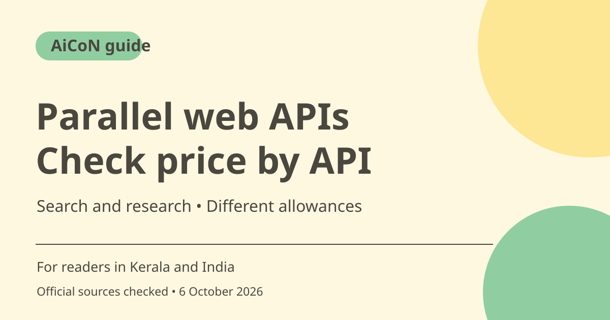

Parallel web APIs: search costs, free limits and source checks
Parallel offers developer APIs for web search, extraction and research with source links. Pricing varies by API and mode, and its pages show different free-usage headlines. Verify the allowance attached to your account rather than treating every request or research job as free.

What is Parallel?
The official site describes APIs for search, extraction, research and other web-backed workflows. Developers can integrate them into an application instead of relying only on a model's remembered information. A source-linked response still needs assessment: a retrieved page can be stale, mistaken or untrusted, and a citation does not make every generated statement correct.
Search and research are different products
The pricing table separates Search from more involved task/research processing, extraction, monitoring and matching workflows. Choose a simple search when you need URLs and excerpts; choose deeper processing only when the task warrants its extra cost. Do not apply the lowest search headline to a long research job or a different API.
Search price by mode
Checked pricing lists Search Turbo/Fast at US$1 per 1,000 requests with ten results and Basic/Advanced at US$5. That is US$0.001 or US$0.005 per base request, about ~₹0.096 or ~₹0.482 at an ~₹96.43/USD estimate. Additional results and extraction can add costs; the maintained docs give formulas for the applicable route.
Free headlines need reconciliation
The general pricing page advertises up to 5,000 requests per month free, while the Search product page says up to 80,000 free search requests. The pricing page explains up to US$80 in signup credit (roughly ~₹7,714) plus US$5 monthly free credit (roughly ~₹482). At the lowest base Search rate, these correspond to up to 80,000 signup requests and 5,000 monthly requests before extras. Do not treat the signup offer as recurring or assume every API/mode qualifies. Confirm the credits actually granted to your account.
For Kerala and India developers
Use a non-sensitive test query relevant to your work and inspect the original returned pages. Check whether a Malayalam or India-specific source actually answers the question rather than accepting a global excerpt. Costs are USD list prices and the INR examples are estimates, not live exchange rates or checkout totals.
Source trust and production controls
Treat webpage content as information, not authority to change your application's instructions or leak private context. Limit what prompts and objectives contain, keep API credentials secure and set usage controls. Record errors and missing evidence instead of inventing an answer when retrieval fails. Test monitoring and retries so failures do not silently create repeated charges.
How to use it, step by step
- Open parallel.ai and its pricing/docs to choose the API matching your task.
- Verify the account's actual free allowance, time window and paid billing route before relying on a promotional headline.
- Configure credentials securely in your application and set usage/spending controls.
- Start with a simple public search, inspect returned URLs and fetch the sources needed for your answer.
- Choose the processing mode deliberately and account for extra results, extraction or deeper tasks.
- Compare the output with the original evidence, including dates and India-specific relevance.
- Add production error handling, privacy checks and controlled retries. Recheck prices and account terms as usage grows.
Cost, eligibility and limits
| Base Search | Checked Turbo/Fast US$1 per 1,000 ten-result requests; Basic/Advanced US$5. Roughly ~₹96/~₹482 per 1,000 at editorial ~₹96.43/USD. |
|---|---|
| Extras | Additional results, extraction and task processing can cost more. Use API-specific formulas. |
| Free allowance | Up to US$80 signup credit and US$5 monthly free credit, roughly ~₹7,714 and ~₹482. Request equivalents depend on mode and extras. Signup credit is not monthly. |
| Audience | Developer APIs, not a guaranteed free consumer research app. Source quality still needs review. |
Frequently asked questions
Is every request priced at US$0.001?
No. API, mode and extras affect cost; research tasks are separate.
Can I add both free headlines together?
No. Signup credit and recurring monthly credit are different. Check your actual balance and each credit allowance's terms.
Does a cited answer need checking?
Yes. Inspect original sources, dates and relevance before relying on it.
Official sources
- PTI 6 October exchange-rate report used for rough INR estimates
- Official product
- Pricing
- Maintained pricing formulas
- Search-specific offer
Checked 6 October 2026. Features and prices can change. This is a guide, not a personal product test.